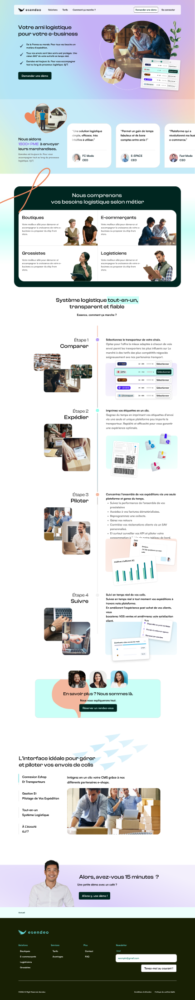
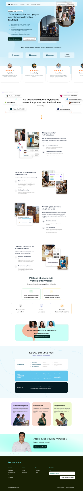
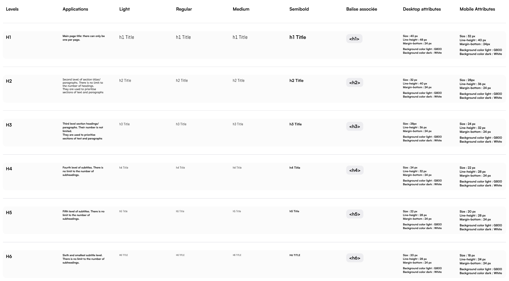
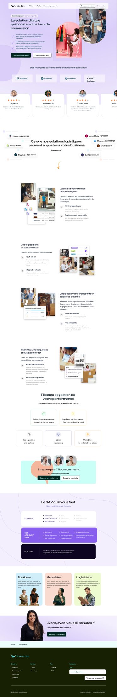
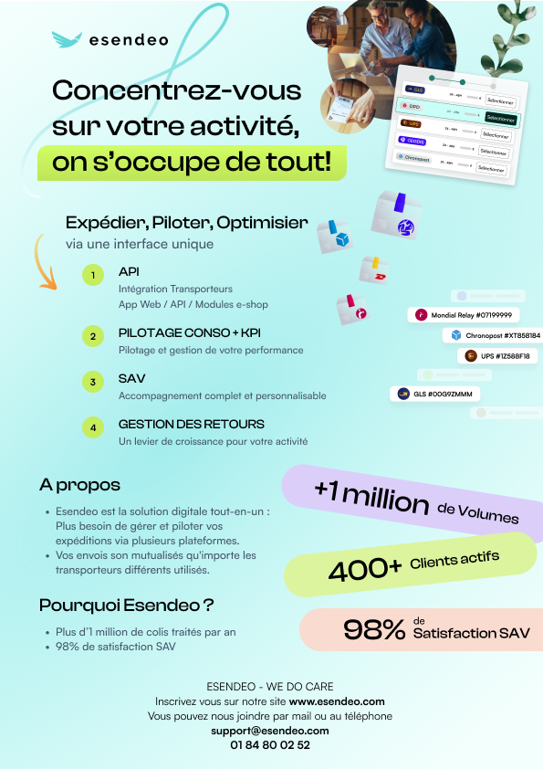
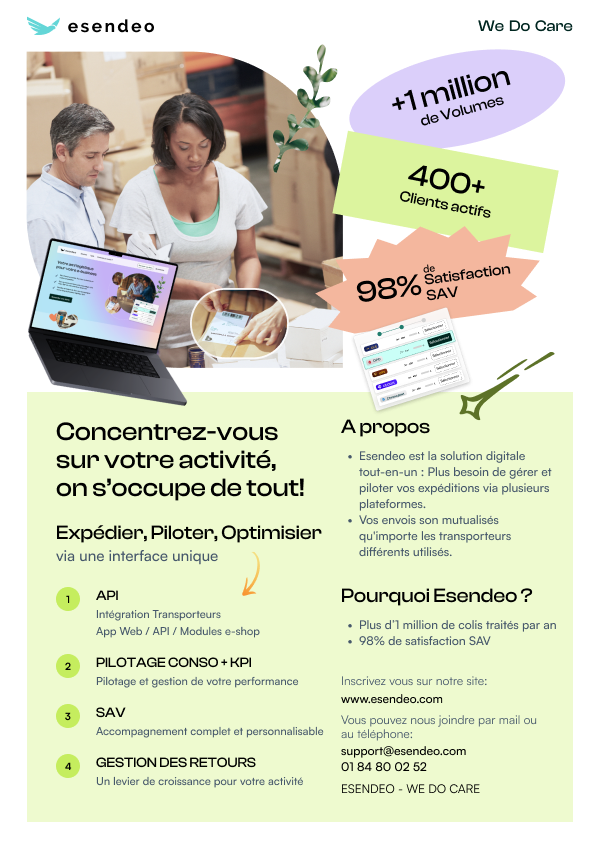

Brand identity · Web design · Communication
Esendeo
One visual foundation.
An entire brand ecosystem.


01 / The world
Not a brand, a website and a campaign.
One recognisable visual world.
Esendeo is a SaaS platform for e-commerce logistics. I connected its identity, digital experience and communication into a system that could explain a complex B2B offer without becoming cold or generic.
The visual grammar behind every touchpoint.
Bold Satoshi typography, a broad but controlled colour scale, organic crops and direct hierarchy gave the system both clarity and range.
care.Brand typography became digital hierarchy.

The website made the system move.
Colour sets context. Type builds hierarchy. Cropped people and product moments make logistics concrete. The same grammar adapts to different audiences without changing identity.

One visual system, many touchpoints.
The identity continued into partner newsletters and printed sales material. Different formats, same voice—and enough flexibility to let each piece have its own composition.




consistent as it grows.
The result